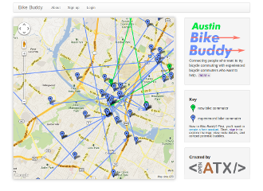

Apps Developed by the Community
Community volunteers use civic hacking to build a government of the people, by the people, and for the people. Local Austin-area designers and developers have been working on new apps that address civic needs. Here are a few examples.
Bike Buddy
Bike Buddy connects people who want to try bicycle commuting with experienced bicycle commuters who want to help. It was developed by volunteers as a May 2013 Bike Month project.
Austin Recycles

"When do we put our bins out?" is one of the most common questions received by Austin Resource Recovery (ARR). Using device location or dropping a pin on the map, this app answers the question. Powered by open data from ARR.
TEC Filer

Imagine a searchable public database of every dollar taken in or spent by a political candidate or PAC. Community volunteers are working with the City of Austin to make this happen. TEC Filer will automate filing of Texas Ethics Commission financial reports.